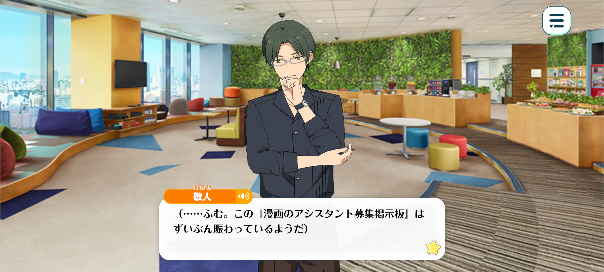
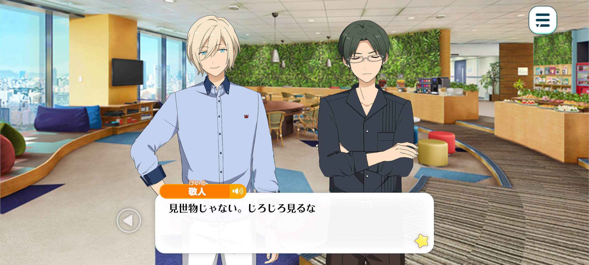
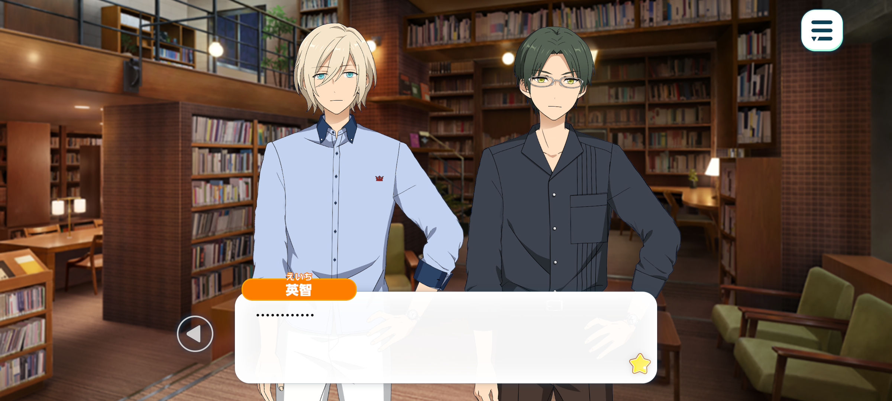
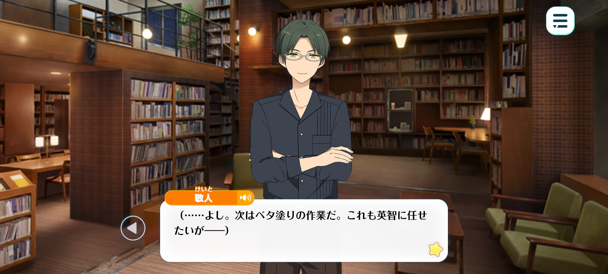
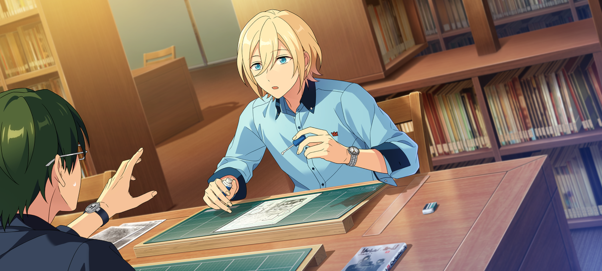
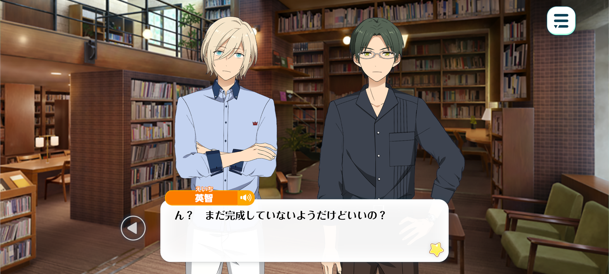

A Hand From The Emperor


Season: Summer

Keito: (...Hmm. This manga assistant recruitment board seems quite active.)
(A convention must be coming up soon. Every time I refresh the page, there are even more posts. Even if I put up one of my own, it'll probably get buried in no time.)
(My manuscripts are still all done by hand, so I'll need to find somewhere to meet up with whoever I end up working with.)
(Seisoukan is out of the question. And if I invited someone to my family home, I'd be so busy that we'd probably end up having to meet in the middle of the night.)
(Even if someone does happen to see my post, I doubt anyone would actually respond...)
(But at this rate, I'll never finish in time. I suppose I have nothing to lose by giving this one last shot...)

Eichi: It's rather amusing watching you fiddle on your phone with such a furious expression on your face ♪. Mind if I come and see what has you so engrossed?
Keito: I'm not here for your entertainment. Stop peering over my shoulder.
Eichi: Let's see... Oh, I didn't know there were bulletin boards for things like this.
Keito: I told you not to look. How incorrigible.
Eichi: Manga, hmm...? Are you thinking of entering the manga competition organised by ES' publishing department, Mizuhanome-sensei?
Keito: Don't call me by my pen name. And this has nothing to do with that competition. Why would one of the judges enter it?
...Well, I suppose there is a connection. Seeing all those submissions coming in one after another made me want to draw manga myself.
I'm working on a doujinshi for the first time in quite a while, but my idol activities have been keeping me occupied. I haven't been able to make nearly as much progress as I'd like.
I'm desperate enough for help that I'd even let a cat lend me a hand at this point. I've been trying to find someone who can help me out, but given the nature of the work, it's proving to be rather difficult…
Eichi: Hmm. Shall I be your cat, then?
Keito: You? And what exactly makes you think you're qualified? Have you secretly become an expert in manga production without telling me?
Eichi: Not even remotely ♪.
I've never done anything like it before, but I'm curious. I'd quite like to try my hand at something you're so passionate about, Keito.
Besides, if you're desperate enough to enlist a cat, surely my paws will do just as well?
Keito: ...
...I can't say I'm particularly reassured by that.
But I've already signed up for the event, and the deadline is fast approaching. I can't afford to be picky at this point.
Even if you're a complete beginner, I suppose you're better than nothing.
Eichi: There we are! Leave everything to me ♪.
Keito: You say that, but you don't even know what you'll be doing...
I'd like to get started as early as tonight. Will that be a problem for you?
Eichi: Not at all. I have tomorrow off, and it's not as though we're going to be doing anything particularly strenuous.
Keito: Hmm... Even so, staying up late isn't good for you. If you start feeling unwell, tell me immediately. Understood?
As for where to work... The dorm room would disturb the other two, so...
What about the library? People use it as a study space, so as long as we keep the noise down, we should be fine. Come and meet me once you're finished with work.
Eichi: Got it. Fufu, I'm looking forward to it.
Keito: Hmph. We're about to head into what you might call a full-scale battle. Don't come unprepared.
Time: Later, at night

Keito:(...Before putting Eichi to work, I decided to have him read the original story first.)
(He's been reading so quietly that I've been able to concentrate on inking this sketch...)
Eichi: ...
...I'm finished. Say, where’s the rest?
Keito: That's the latest volume. There's nothing more. I thought it would take you a little longer, but you got through it surprisingly quickly.
Eichi: Well, it was so interesting that I couldn't put it down. I ended up reading the whole thing in one sitting.
It's a wonderful ensemble story. Even with such a large cast, every character has their own distinct personality, and the way all the foreshadowing comes together is beautifully done.
Now I'm even more curious to find out what happens next. I wonder if the publisher would tell me anything if I asked ♪.
Keito: Don't even think about it. That would be completely out of line.
Eichi: Fufu, I'm only teasing. Anyway, what would you have me do?
Keito: Wouldn't you like to take a break first?
Eichi: How considerate of you, Keito. But I'm quite all right. All I've been doing is reading manga, after all.
Keito: I see. In that case, could you erase these lines for me?
Eichi: Of course. Leave it to me.
Keito: (Eichi should be perfectly capable of handling something as simple as erasing the pencil lines.)
(I should get back to work, too. Before I start inking, I need to clean up the parts of the sketch that extend beyond the outlines.)
Eichi: ...
Time: Some time later

Keito: (...All right. Next is the solid black. I'd like to leave that to Eichi as well, but...)
(...Actually, come to think of it, he still hasn't given my manuscript back...)

Keito: Eichi... EICHI?!
What on earth are you doing?! Why are you using correction fluid on the line art?!
Eichi: Hm? You told me to erase it, didn't you, Keito? I was only following instructions.
Keito: I meant with an eraser... No, I suppose I should have been more specific.
I wanted you to erase the pencil guidelines. You know, like this.
Eichi: I see. So, what do you intend to do about the page I've ruined?
Keito: I'll have to redraw it. Fortunately, it's only one page, so I should still have enough time to make up for it.
Yes, I can recover from this. Somehow, this little mishap has made me even more determined to get this done.
Eichi: Oh? In that case, perhaps I should make things a little more difficult for you next time.
Keito: Don’t you dare…...And just to be clear, that wasn't an invitation. Understood?
Time: Several hours later, early hours of the morning

Keito:...Alright. I think we'll leave it here for tonight.
Eichi: Hmm? But it doesn't look finished yet. Are you sure that's all right?
Keito: Yes. Thanks to your surprising dexterity, we've made much more progress than I'd expected.
All that's left is the typesetting. At this rate, meeting the deadline shouldn't be a problem.
...If I were working digitally, I wouldn't have to go through the trouble of cutting and pasting everything by hand.
And with more and more screentones being discontinued, perhaps it's about time I considered making the switch myself.
Eichi: Really? What a shame. I've only just gotten the hang of applying screentones, too.
It's been so much fun getting to try all these things for the first time...Oh, Keito. You'll give me a copy once it's printed, won't you? ♪
Keito: No. You're just going to use it as another excuse to tease me—
...is what I'd like to say. But honestly, I couldn't have managed without your help. Just this once, I'll make an exception.
Eichi: Thank you. That makes me very happy.
Yawnnn…
Ah, excuse me.
Keito: It is rather late. You must be exhausted. I'll walk you back to your room. And—
...Thank you for all your help tonight, Eichi. I really appreciate it.